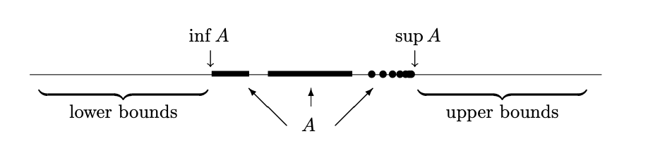

Chapter 2 The Real Numbers#
2.1 The irrationality of \(\sqrt{2}\) (or What puzzled the Greeks?)#
For centuries the real numbers were considered in an informal way: nobody knew exactly how to define \(\mathbb{R}\), but they knew what it ought to look like.
Our intuitive understanding of \(\mathbb{R}\) is the set of all points on an infinite straight line of zero width. We write
where \(\mathbb{Q}^{c}\) is the set of all irrational numbers [1], i.e. real numbers that cannot be written as ratios of whole numbers (which from now on we will be referring to as “integers”).
The study of \(\mathbb{R}\), perhaps sensibly enough, is called Real Analysis.
Square roots of \(2\)#
Let’s set ourselves back to a time before \(\mathbb{R}\) was invented [2], and ask: why was it necessary to invent it? Why should we feel that \(\mathbb{Q}\) is not enough?
The result that set the ancient Greeks thinking was this:
Theorem 2
There is no rational number \(x\in \mathbb{Q}\) such that \(x^2 = 2\).
(I will give two (mathematically identical but expositorily different) versions of the same proof: The first one mimics the way I will be presenting -but not necessarily how I will record- proofs in the lecture. The second is very close to the style of proofs you will see in most books. Compare and contrast! For the rest of these notes I have tried to stay somewhere in the middle.)
Proof. A rational number is any number that can be expressed in the form \(p/q,\) where \(p\) and \(q\) are integers. In this notation our theorem asserts that, no matter how we choose \(p\) and \(q\), it is never the case that \((p/q)^2=2.\)
Our line of attack will be indirect, building an argument resulting in a proof by contradiction.
The idea is to assume that there is a rational number whose square is \(2\) and then proceed (following established logic rules) until we reach a conclusion that is unacceptable [3] . At this point (having reached an absurd conclusion), we will be forced to retrace our steps and reject the erroneous assumption we started with, i.e., reject the assumption that some rational number squared is equal to \(2\). In short, we will prove that the theorem is true by demonstrating that it cannot be false.
Let’s get started: we will assume for contradiction that there exist integers \(p\) and \(q\) satisfying
We may also assume (without loss of generality), that \(p\) and \(q\) have no common factors (in this case we say that the fraction is written in lowest terms). We are allowed to do that (and not violate generality by introducing any special properties or making any additional assumptions) because, if \(p\) and \(q\) had a common factor, we could simply factorise them first and then cancel it out, and rewrite (the same!) fraction in lowest terms. Now, equation (1) implies
From this, we immediately see that the integer \(p^2\) is even (it is divisible by \(2\)), and hence \(p\) must be even as well because the square of an odd number is odd [4]. This allows us to write \(p=2r,\) where \(r\) is also an integer. If we substitute this back into equation (2) (and expand) we get to
This in turn implies that \(q^2\) is even, and by the same argument as above [5], \(q\) is also even.
But wait a second! We have now shown that \(p\) and \(q\) are both even, i.e., they are both divisible by \(2\), when they were originally assumed to have no common factor! From this logical impasse, we can only conclude that equation (1) cannot hold for any integers \(p\) and \(q,\) and thus the theorem is proven.
Proof. [Same proof as you might find it in a book. Fair warning: this (if not worse…) will be the case for 99% of the proofs you will ever see)]
We’ll prove this by contradiction; suppose there is such a number \(x \in \mathbb{Q}\). Because it’s in \(\mathbb{Q}\), it takes the form \(x = p/q\) for some integers \(p\) and \(q\) with \(q\neq 0\).
We may as well take \(p\) and \(q\) to be coprime (“in lowest terms”).
Then we have \(p^2/q^2 = x^2 = 2\), so \(p^2 = 2q^2\) with \(p\) and \(q\) coprime.
Now, the right-hand side is even. That means that \(p\) itself must be even: so we can write \(p = 2r\).
Then we have \((2r)^2 = 2q^2\), which simplifies to \(4r^2 = 2q^2\), or \(2r^2 = q^2\). Here the left-hand side is even, so \(q^2\) must be even. Hence \(q\) itself must be even.
But now we’ve found that both \(p\) and \(q\) are even, which is a contradiction since we chose them to be coprime. This contradiction shows that our initial assumption is absurd, and there is no rational \(x\) with \(x^2 = 2\).
Some comments#
I felt obliged to word the statement of that theorem fairly carefully.
What I wanted to say, of course, was:
The number \(\sqrt{2}\) is not in \(\mathbb{Q}\).
But I want to flag that up as being possibly inappropriate: our aim in this section is to say something intelligent about systems of numbers bigger than \(\mathbb{Q}\). We shouldn’t even be confident that \(\sqrt{2}\) exists yet.
However, thanks to this theorem, we can be confident at least that there’s no number inside \(\mathbb{Q}\) which deserves to be called \(\sqrt{2}\).
Irrational numbers#
This, to the Greeks, was evidence that there was a world beyond \(\mathbb{Q}\); a world of irrational numbers (numbers not in \(\mathbb{Q}\)). They needed a number, called \(\sqrt{2}\), so they could talk about the diagonal of a unit square:
{kind=link}
Irrational numbers today#
Over the years, more and more examples were found of numbers which one might want to talk about, but which cannot be in \(\mathbb{Q}\): various powers, logarithms, sines, cosines, and other constructions besides.
One high point includes the proof by Lambert in 1761 that \(\pi\) and \(e\) are irrational.
On the other hand, modern mathematics is still not particularly good, in general, at proving that numbers are irrational. For example, if you want to become famous, simply prove (please \(\ldots\) ) that any one of the following numbers is irrational:
Investigating the reals#
For the time being, and for the time being only, we’ll investigate the reals in a similar, informal way. For now, you can regard the real numbers \(\mathbb{R}\) as being built out of decimals (as you did at school). We’ll sort this out eventually, and consider a modern construction of the reals.
A picture#
Our mental picture of the reals should be a picture of a numberline. Here’s a numberline with some interesting points marked on:
{kind=link}
I’ve marked on the integers \(-1\), \(0\), \(1\), \(2\) and \(3\), which are all in \(\mathbb{Z},\) and hence in \(\mathbb{Q}\).
I’ve also marked on \(\sqrt{2}\), which we now know to be irrational, and \(\pi\), which I’ve claimed to you is irrational: these things are in the set \(\mathbb{Q}^{c}\) of irrational numbers.
In my mind, I think of the real numbers \(\mathbb{R}\) as a solid line, and the rational numbers \(\mathbb{Q}\) as a very fine gauze net stretched out within it.
The rationals in \(\mathbb{R}\)#
Bear in mind that that the rationals \(\mathbb{Q}\) are a lovely system of numbers: we can add and subtract and multiply and divide rationals and remain inside the rationals. Formally: if \(x \in \mathbb{Q}\) and \(y \in \mathbb{Q}\), then \(x+y\), \(x-y\), \(xy\) and \(x/y\) (if \(y\) is nonzero) are all elements of \(\mathbb{Q}\). We say that \(\mathbb{Q}\) is closed under addition, subtraction, multiplication and division. In Semester 1 of MAS107 you saw that \(\mathbb{Q}\) (with the standard addition and multiplication) is a field.
The set \(\mathbb{Q}\) also has a natural order defined on it. Given any two rational numbers \(r\) and \(s\), exactly one of the following is true:
This ordering is transitive in the sense that if \(r<s\) and \(s<t,\) then \(r<t,\) which leads us to visualise the rational numbers as being laid out from left to right along a number line. Unlike \(\mathbb{Z},\) there are no intervals of empty space. Given any two rational numbers \(r<s,\) the rational number \((r+s)/2\) sits halfway in between (and then you repeat this process with this rational number and each of the two endpoints and get two more rational numbers, and then keep repeating that…). This implies that the rational numbers are densely nestled together.
With the field properties of \(\mathbb{Q}\) allowing us to safely carry out the algebraic operations of addition, subtraction, multiplication, and division, let’s remind ourselves just what it is that \(\mathbb{Q}\) is lacking. By Theorem 2, it is apparent that we cannot always take square roots (and stay in \(\mathbb{Q}\)). The problem, however, is actually more fundamental than this. Using only rational numbers, it is possible to approximate \(\sqrt{2}\) quite well: For instance, \(1.414^2 = 1.999396.\) By adding more decimal places to our approximation, we can get even closer to a value for \(\sqrt{2}\), but, even so, we are now well aware that there is a “hole” in the rational number line where \(\sqrt{2}\) ought to be. Of course, there are quite a few other holes – at \(\sqrt{3}\) and \(\sqrt{5}\), for example (we’ll see that in a moment).
Returning to the dilemma of the ancient Greek mathematicians, if we want every length along the number line to correspond to an “actual number”, then another extension to our number system is in order. Thus, to the chain \(\mathbb{N} \subseteq \mathbb{Z} \subseteq \mathbb{Q}\) we append the real numbers \(\mathbb{R}.\) The reals \(\mathbb{R}\) are also a lovely system of numbers, closed under not just those four operations but many others: square roots (of positive numbers), sines, cosines, and so on.
The question of how to actually construct \(\mathbb{R}\) from \(\mathbb{Q}\) is rather complicated business and will be discussed later once we’ve built some machinery. For the moment, it is not too inaccurate to say that \(\mathbb{R}\) is obtained by…filling in the gaps in \(\mathbb{Q}.\) Wherever there is a hole, a new irrational number is defined and placed into the ordering that already exists on \(\mathbb{Q}\). The real numbers are then the union of these irrational numbers together with the more familiar rational ones, and we write \(\mathbb{R}=\mathbb{Q} \cup \mathbb{Q}^c\).
The irrationals in \(\mathbb{R}\)#
The irrational numbers \(\mathbb{R} \backslash \mathbb{Q}\) are not a lovely system of numbers: they are not closed under any of these things.
For example, can we think of two irrational numbers whose sum is rational?
Can we think of two irrational numbers whose product is rational?
So, the irrational numbers \(\mathbb{R}\backslash\mathbb{Q}\) really are just the big messy clump left over in \(\mathbb{R}\) when you remove \(\mathbb{Q}\). It’s a bit weird we even have a name for these: I don’t know a good name for the set \(\mathbb{Q}\backslash\mathbb{Z}\) of rationals which aren’t integers.
Irrationals and rationals#
However, at least the following is true (and almost obvious):
Proposition 1
Let \(x\) be irrational, and \(y\) be rational. Then \(x+y\) is irrational.
Also, if \(y\) is nonzero, then \(xy\) is irrational.
Proof. We prove the first one by contradiction. Suppose that \(x+y\) is rational. Then \((x+y)-y\) is also rational, being obtained by subtracting two rational numbers, but it’s equal to \(x\) which we know to be irrational. That’s the contradiction we wanted.
We prove the second one by contradiction too. Suppose that \(xy\) is rational. Then \((xy)/y\) is also rational, as it’s obtained by dividing two rational numbers (with the latter nonzero), but it’s equal to \(x\) which we know to be irrational. That’s the contradiction we wanted.
To increase our supply of irrational numbers, we will prove that \(\sqrt{p}\) is irrational for every prime number \(p\), so \(\sqrt{2}, \sqrt{3}, \sqrt{5}, \sqrt{7}\), etc are irrational. Since there are infinitely many prime numbers, this immediately tells us that there are infinitely many irrational numbers.
We will need the prime factorisation theorem which was proved in Semester 1 of MAS107. As a reminder, this states that every natural number is uniquely expressible as a product of primes. So if \(n \in \mathbb{N}\), we may write
where \(p\) is the largest prime that we need, and \(m_{1}, m_{2}, \ldots, m_{N} \in \mathbb{N}_{0}\), e.g.
so in this case, \(p = 11\), \(m_{1} = 4, m_{2}= 2, m_{3} = 1, m_{4} = 0, m_{5} = 1.\)
The next result presupposes that square roots exist, and we will revisit this later.
Theorem 3
If \(p\) is a prime number then \(\sqrt{p}\) is irrational.
Proof. Assume that \(\sqrt{p}\) is rational and seek a contradiction. Write \(\displaystyle\sqrt{p} = \displaystyle\frac{a}{b}\) and then square both sides to get \(p = \displaystyle\frac{a^{2}}{b^{2}}\) so that \(a^{2} = b^{2}p\).
Write \(a\) in terms of its prime decomposition as \(a = 2^{m_{1}}3^{m_{2}}5^{m_{3}}\cdots q^{m_{N}}\). If we square this we get
Now we do the same for \(b\). We write its prime factorisation as \(b=2^{n_{1}}3^{n_{2}}5^{n_{3}}\cdots r^{n_{M}}\), and square this to get
Return to the equation \(a^{2} = b^{2}p\), and substitute in the prime factorisations for \(a^{2}\) and \(b^{2}\). We get
Now if the number \(p\) doesn’t appear on the left hand side we already have a contradiction and the proof would be done.
So let’s assume that it does appear, and that it is one of the numbers \(2,3,5, \ldots,q\). Each of these prime numbers appears an even number of times on the left hand side (why?). On the right hand side, either \(p\) is not one of the numbers \(2,3,\ldots, r\), in which case it only appears once altogether, or it is in that list of numbers, in which case the extra multiplication by \(p\) means that it appears an odd number of times. Either way we have a contradiction, and so we conclude that \(\sqrt{p}\) cannot be a rational number.
Some comments - Interlude:#
In addition to its aesthetic content, the method of the proof here offers a couple of useful lessons:
Notice that in the beginning of this proof we were basically following the first few steps of the proof that \(\sqrt{2}\) is irrational. I am drawing your attention to this because it partially justifies the “obsession” of your lecturers with proofs; they are an invaluable source of ideas and arguments that you can also bend to your purposes.
The punchline of the above proof is really “even \(\neq\) odd”, an instance of what we call “exploiting an invariant”. This is a useful type of argument in which we identify a quantity intrinsic to our framework that doesn’t change in the course of the proof (hence why the name”invariant”). In the above proof the invariant we used was “parity” (the “even-ness” or “odd-ness”).
An easy corollary of this theorem is that there are infinitely many irrational numbers (as we know that there are infinitely many primes).
The next result goes a little further than Theorem 3 and it gives us a way to “construct” (or rather identify them as such) more irrational numbers. Recall that a square number (sometimes called a perfect square) is a natural number of the form \(n^2\), for a natural number \(n\).
Theorem 4
If \(N\) is a natural number then either it is a square number or \(\sqrt{N}\) is irrational.
Proof. Suppose that \(N\) is not a square number, and that \(\sqrt{N}\) is a rational number. We seek a contradiction. Write \(\sqrt{N}\) as a (non-negative) integer plus a fraction in its lowest terms,
where \(a,b,c \in \mathbb{N}, b < c\) and the fraction \(\displaystyle{\frac{b}{c}}\) is expressed in its lowest terms. Multiply both sides of equation (3) by \(c\), and then square both sides to get
Rearranging, we get
Then \(c\) is a factor of \(b^{2}\), so that \(b^{2} = cd\) where \(d = Nc -a^{2}c - 2ab \in \mathbb{N}\). So \(c = \displaystyle{\frac{b^{2}}{d}}\). Substitute for \(c\) in (3) to get
We know \(b < c\). As \( bd < cd = b^{2}\), we see that we also have \(d < b\). So \(\displaystyle{\frac{d}{b} = \frac{b}{c}}\) but \(\displaystyle{\frac{d}{b}}\) is the same fraction but written in lower terms, and that is our desired contradiction.
From this, we see that \(\sqrt{2}, \sqrt{3}, \sqrt{5}, \sqrt{6}, \sqrt{7}, \sqrt{8}, \sqrt{10}, \sqrt{11}, \sqrt{12}, \ldots\) are irrational.
Back to business now. What properties does the set of irrational numbers have. How do the sets of rational and irrational numbers fit together. Is there a kind of symmetry between the rationals and the irrationals, or is there some sense in which we can argue that one type of real number is more common than the other. The one method we have seen so far for generating examples of irrational numbers is through square roots. Not too surprisingly, other roots such as \(\sqrt[3]{2}\) or \(\sqrt[5]{3}\) are most often irrational. Can all irrational numbers be expressed as algebraic combinations of n-th roots and rational numbers, or are there still other irrational numbers beyond those of this form. We will start addressing many of these questions immediately, starting with an interesting result about how rational and irrational numbers fit together.
This is a consequence of Theorem 3:
Theorem 5
Given any two rational numbers \(a\) and \(b\), with \(a < b\), we can find infinitely many irrational numbers \(q\) such that
Proof. We will show that the above statement holds using a construction. given rationals \(a\) and \(b\) we will give an algorithm that outputs irrational numbers between \(a\) and \(b\), and the name of the game is threefold.
Show that the constructed numbers are irrational.
Show that we can create infinitely many of them.
Show that all numbers created this way lie between \(a\) and \(b\).
Let \(p\) be a prime number. Since \(p > 1\), we have \(\sqrt{p} > 1\), and so \(\displaystyle\frac{1}{\sqrt{p}} < 1\). Now define \(\displaystyle q = a + \frac{1}{\sqrt{p}}(b-a)\). Then, by Proposition {prf:ref}:irratsumprod, \(q\) is irrational, and since there are infinitely many prime numbers, it follows that there are infinitely many numbers of this form.
We will prove that \(a < q < b\).
Now \(q > a\) since \(\displaystyle{ q-a = \frac{1}{\sqrt{p}}(b-a) > 0},\) and \(q < b\) since
and the result is established.
Please note that we are not claiming that we have found all irrational numbers between \(a\) and \(b\) (or equivalently, we are not claiming that this algorithm will output every irrational number between \(a\) and \(b\)). The proof provides a way to construct infinitely many such irrational numbers but makes no claim that these are all of them. As a matter of fact, we will soon see that this is not case, the above algorithm only outputs “a few” of them!
A quick recap#
The Greeks’ understanding of the relationship between geometric length and arithmetic number was violently shaken by the discovery that there were numbers (e.g., \(\sqrt{2}\), cf. Theorem 2) which are neither integer nor rational. This was such an assumption-shattering result that, after this discovery, my esteemed ancestors seem to have practically dropped arithmetic in favour of geometry!
The discovery of these unusual (up to that point in time) objects gave rise to a host of new questions: “Are there more of these numbers, and if yes, how can we “construct” more examples?” (Theorem 3 answers that). Once we knew that there are more examples, it is quite natural to start asking “how often do these numbers show up” or “how are these numbers distributed”? Quantifying “often” is a pretty difficult thing to do, but it’s already an impressive step to be able to assert (cf. Theorem 5) that given any two rational numbers, we can find infinitely many irrationals between them!
In Semester 1 of MAS107, it was shown that \(\mathbb{Q}\) is countable, (i.e. it can be put into one–to–one correspondence with \(\mathbb{N}\)), but that \(\mathbb{R}\) is uncountable. [6] Since the union of two countable sets is countable, it follows that the set \(\mathbb{Q}^{c}\) of irrationals is also uncountable.
2.2 From the naturals to the reals - the Axiom of Completeness#
What exactly is a real number? Until now, we got as far as saying that the set \(\mathbb{R}\) of real numbers is an extension of the rational numbers \(\mathbb{Q}\) in which there are no “holes” or gaps. We have also admitted that we want every length along the number line, e.g. \(\sqrt{2}\) to correspond to a real number (and vice versa).
Getting started. a first definition for \(\mathbb{R}\)#
First, \(\mathbb{R}\) is a set containing \(\mathbb{Q}\). The operations of addition and multiplication on \(\mathbb{Q}\) extend to all of \(\mathbb{R}\) in such a way that every element of \(\mathbb{R}\) has an additive inverse, and every nonzero element of \(\mathbb{R}\) has a multiplicative inverse. We will also assume that \(\mathbb{R}\) is a field [7], meaning that addition and multiplication of real numbers is commutative, associative, and the distributive property holds. It is important to note that while we have proved that \(\mathbb{Q}\) is a field (with the standard addition and multiplication), at this point we don’t have a good enough definition for what it means to be a real number to prove it for elements of \(\mathbb{R}\); we are simply saying at this point that we are in a set of objects containing, the very concrete, \(\mathbb{Q}\) and we equip this set with all necessary properties that would make it a field. This allows us to perform all of the standard algebraic manipulations that are second nature to us. We also assume that the familiar properties of the ordering on \(\mathbb{Q}\) extend to all of \(\mathbb{R}\). By the latter I mean that deductions of the form “If \(a<b\) and \(c > 0\), then \(ac < bc\)” will be carried out freely without much comment. To use official terminology, we assume that \(\mathbb{R}\) is an ordered field, which contains \(\mathbb{Q}\) as a subfield, but I won’t bother with rigorously and precisely defining these terms.
We are getting dangerously close to introducing the final, and major, assumption we want to make about the real number system, one that will take us clearly outside of \(\mathbb{Q}\)-territory, and it is quite important that we set the record straight about our approach.
We are not showing how to construct \(\mathbb{R}\) from \(\mathbb{Q}\); we will do that at a later point. Instead, following history in how the subject was developed, given what we know and understand at this point, we are going to have to accept some undefined terms and unproven assumptions. These assumptions (axioms) that we will make, need to clearly capture what we mean by insisting that \(\mathbb{R}\) does not have the type of gaps that we have found in \(\mathbb{Q}\).
This brings us to the final, and most distinctive, assumption about the real number system. Because this is the defining difference between the rational numbers and the real numbers, we will be excessively precise about how we phrase this assumption, hereafter referred to as the Axiom of Completeness.
Axiom 1 (Axiom of Completeness)
Every nonempty set of real numbers that is bounded above has a least upper bound.
Lots of new terms! Worry not, we will make sense of everything right away.
2.2.1 Bounds and Completeness#
To start making sense of the Axiom of Completeness we first need to understand the various terms involved. We’ll start slowly building on concepts we are very familiar with.
Upper/Lower Bounds; Maximum/Minimum#
Let \(A \subset \mathbb{R}\) be finite and non-empty. We use \(\max(A)\) and \(\min(A)\) to denote the largest (smallest) numbers in \(A\), respectively.
The formal definitions are:
For finite (non-empty) sets, it is clear that such minimal and maximal elements exist.
Let \(A \subseteq \mathbb{R}\). We will also use the convenient notation
so, for example, if \(A= \{-3, -2, 5\}\), then \(-A = \{3,2,-5\}=\{-5, 2, 3\}\).
You might want to try to prove that \(\min(A) = -\max(-A)\). We’ll establish a more general result later on in this section.
We are also interested in infinite sets of real numbers. Let \(a, b \in \mathbb{R}, a < b\). Important roles in Analysis are played by the closed intervals:
and the open intervals:
We also use the following notation:
Half-open intervals such as
are also useful.
Observe that \([a, b]\) has a maximum element \(b\), and a minimum element \(a\). However, infinite (in the sense of cardinality) subsets of \(\mathbb{R}\) need not have minimum or maximum elements. For example, we have that
Proposition 2
The open interval \((a, b)\) has no maximum or minimum element.
Proof. Suppose that \(x = \max( (a, b) )\). By definition, \(x\) is an element of the set \((a,b),\) and as \(b\) itself is not included, \(x = b - \varepsilon\) for some \(\varepsilon > 0\). But then \(x < b - \varepsilon/2 < b\), so \(b - \varepsilon/2 \in (a,b)\) is a larger number in the set than the maximum \(x\), and we have a contradiction. The proof for the minimum is similar (Exercise for you).
We are now going to develop generalisations of the idea of maximum and minimum elements that are extremely useful tools in Analysis. First we need to think about bounds.
Definition 1
Let \(A \subset \mathbb{R}\).
We say that \(A\) is bounded above if there exists \(M \in \mathbb{R}\) such that \(x \leq M\) for all \(x \in A\).
We say that \(A\) is bounded below if there exists \(L \in \mathbb{R}\) such that \(x \geq L\) for all \(x \in A\).
We say that \(A\) is bounded if it is both bounded above and below.
If \(A\) is bounded above, a number \(M\) as in part (1) is called an upper bound for \(A\), and if \(A\) is bounded below, then a number \(L\) as in part (2) is called a lower bound for \(A\).
For example, \((-\infty, 1)\) is bounded above, but not below; \((-47, \pi)\) is bounded.
Remark 1
Notice (exercise) that \(A\) being bounded above and below is equivalent to saying that there exists \(K\in\mathbb{R}\) such that \(|x|\leq K\) for all \(x\in A\).
Least Upper Bound and Greatest Lower Bound#
For \(a, b \in \mathbb{R}\) with \(a < b\), the set \((a, b)\) has many upper bounds, \(b+ 1/2, b + 1, b+2, b + 3\) etc., but it is clear that \(b\) is special as it is the smallest. If \(A\) is an arbitrary non-empty subset of \(\mathbb{R}\) that is bounded above, is it obvious that a least (i.e., smallest) upper bound for \(A\) exists? Intuitively we want to say “yes”, but is it something that we can prove? (This is exactly what the Completeness Axiom wants us to assume ).
First let’s make a precise definition.
Definition 2
If \(A\) is non-empty and bounded above, the least upper bound of \(A\) is a real number \(\alpha\) such that
\(\alpha \) is an upper bound for the set \(A\), i.e., \(x \leq \alpha\) for all \(x \in A\) and
if \(\beta\) is any upper bound for \(A\) then \(\beta \geq \alpha\)
The least upper bound of \(A\) is usually called the supremum, and written \(\sup(A)\)[8].
Now that we’ve seen all the necessary definitions, let’s go back to where we started:
Axiom 2 (Completeness Axiom [9] for \(\mathbb{R}\):)
Every non-empty set of real numbers that is bounded above has a least upper bound.
We will assume the completeness property. Later on, we will see completeness viewed under a different light, and this will be when we discuss the construction of the real numbers as limits of Cauchy sequences of rational numbers.
It follows from the definition [10] that the supremum of \(A\) is unique, which is why we wrote the least upper bound, not a least upper bound.
Important examples are
\(\sup((a,b)) = b\) and
if the set \(A\) has a maximum element, you can show (exercise) that \(\sup(A) = \max(A).\) In this case \(\sup(A)\) is itself an element of the set \(A,\) and we say that the maximum of A is attained.
Now suppose that \(A\) is non-empty and bounded below. In the next theorem we will show that it has a greatest lower bound.
Again, let’s have a precise definition first.
Definition 3
If \(A\) is non-empty and bounded below, the greatest lower bound of \(A\) is a real number \(L\) such that
\(L\) is a lower bound for the set \(A\), i.e., \(L\leq a\) for all \(a \in A\) and
if \(\beta\) is any lower bound for \(A\) then \(\beta \leq L\).
The greatest lower bound of \(A\) is usually called the infimum, and written \(\inf(A)\) [11].
It is certainly the case that all of our conclusions to this point about least upper bounds have analogous versions for greatest lower bounds. The Axiom of Completeness does not explicitly assert that a nonempty set bounded below has an infimum, but this is because we do not need to assume this fact as part of the axiom. Using the Axiom of Completeness, there are several ways to prove that greatest lower bounds exist for bounded sets. This is explored in the following result.
Theorem 6
A set \(A \subset \mathbb{R}\) is bounded below if and only if \(-A\) is bounded above. Furthermore if \(A \neq \emptyset\) is bounded below, then it has a greatest lower bound and
Proof. It is easy to see that \(A\) is bounded below (by \(l\) say) if and only if \(-A\) is bounded above (by \(-l\)). Now, if a set \(A \neq \emptyset\) is bounded below, then \(-A\) is non-empty, and bounded above, so \(\sup(-A)\) exists by the completeness property. Let \(L = -\sup(-A)\). Since for all \(x \in A\), \(-x \leq -L\), then \(x \geq L\) and so \(L\) is a lower bound for \(A\).
To show that \(L\) is the greatest lower bound we’ll use proof by contradiction. So we assume that there exists \(\beta \in \mathbb{R}\) so that \(x \geq \beta > L\) for all \(x \in A\). Then \(-x \leq -\beta < -L\) for all \(x \in A\), i.e. \(-\beta\) is a smaller upper bound for \(-A\) than \(-L= \sup(-A)\), and that is our desired contradiction.
Some important examples are
\(\inf((a, b)) = a,\) and
if the set \(A\) has a minimum element, you can show (exercise) that \(\inf(A) = \min(A).\) In this case \(\inf(A)\) is itself an element of the set \(A,\) and we say that the minimum of A is attained.
As before, it is a simple matter to prove that the greatest lower bound is unique (exercise).
Below is a graphic to help us visualise all these new concepts:
{kind=link}
Example 1
Let
The set \(A\) is bounded both above and below. Possible candidates for the upper bound are \(\displaystyle 2,\frac32, 1, \frac12\) (how many can you list?). We claim \(\displaystyle \sup A = \frac12.\) To prove this rigorously we need to show that both of the properties required by Definition 2 are satisfied. Indeed, as \(n \in \mathbb{N}\), we always have \(\displaystyle n \geq 1 \Leftrightarrow \frac{1}{2n} \leq \frac12,\) meaning that \(\displaystyle \frac12\) is an upper bound. To verify that \(\displaystyle \frac12\) is indeed the least upper bound we will argue by contradiction. If that is not the case, there has to be some upper bound, call it \(b\), which is smaller than \(\displaystyle \frac12\). But \(\displaystyle \frac12 \in A,\) and as \(b\) is assumed to be a bound for \(A,\) it follows that \(\displaystyle \frac12 \leq b,\) which directly contradicts the assumption that \(b\) was the smallest of all upper bounds, and we are done. Notice that in this case, \(\displaystyle \sup A = \frac12 = \max A,\) i.e., the maximum of \(A\) is attained. In other words, there is an \(n \in \mathbb{N}\) such that \(\displaystyle \frac{1}{2n} = \frac12\) (in this case \(n=1\)).
Although we don’t have yet all the tools (wait until Lemma Lemma 2) to rigorously prove it, it should seem plausible that \(\inf A=0.\) Do however note that in this case the set \(A\) has no minimum, i.e., the minimum is not attained. In other words, there is no \(n \in \mathbb{N}\) such that \(\displaystyle \frac{1}{2n} = 0.\) \(0\) is a lower bound for \(A,\) and we can surely find elements of \(A\) that are “as close as we like” to \(0\) but we can never quite “hit” \(0.\)
An important lesson to take from this example is that \(\sup A\) and \(\inf A\) may or may not be elements of the set \(A.\) This issue is tied to understanding the crucial difference between the maximum and the supremum (or the minimum and the infimum) of a given set.
And one more important example to emphasize this point:
Example 2
Consider the open interval
and the closed interval
Both sets are bounded above (and below), and both have the same least upper bound, namely \(3\). It is not the case, however, that both sets have a maximum. A maximum is a specific type of upper bound that is required to be an element of the set in question, and the open interval \((1, 3)\) does not possess such an element. Thus, the supremum can exist and not be a maximum, but when a maximum exists then it is also the supremum (similarly for the infimum).
Back to the Axiom of Completeness.#
Although we have seen now that not every nonempty bounded set contains a maximum, the Axiom of Completeness asserts that every such set does have a least upper bound. Let me say this again. we are not going to prove this. An axiom in mathematics is an accepted assumption, to be used without proof. Preferably, an axiom should be an elementary statement about the system in question that is so fundamental that it seems to need no justification. Perhaps the Axiom of Completeness fits this description, and perhaps it does not. Before deciding, let’s remind ourselves why it is not a valid statement about \(\mathbb{Q}.\)
Example 3
Consider the set
This set is non-empty, and bounded above by, for example, \(3/2\), which is rational. When regarded as a subset of the real numbers its supremum is \(\sqrt{2}\), which is irrational. But this set has no supremum in the set \(\mathbb{Q}\). To be more clear, forget about \(\mathbb{R}\) for a second, and pretend that the only numbers in our universe are the rational ones. As we start searching for the least upper bound, \(b,\) for \(A\) we might try [12] \(\displaystyle b=\frac{142}{100}\), which is an upper bound. Notice however that \(\displaystyle b'=\frac{1415}{1000}\) is also an upper bound which is still smaller. Is there any hope that we will be able to find the smallest one?
In the rational numbers, there is not. In the real numbers, there is. Back in \(\mathbb{R},\) the Axiom of Completeness states that we may set \(\alpha = \sup A\) and be confident that such a number exists. In the next section, we will prove that \(\alpha^2 = 2.\) But according to Theorem 2, \(\alpha\) is not a rational number. If we are restricting our attention to only rational numbers, then \(\alpha\) is not an allowable option for \(\sup A\), and the search for a least upper bound goes on indefinitely. Whatever rational upper bound is discovered, it is always possible to find one smaller.
The tools needed to carry out the computations described in the above example depend on some results about how \(\mathbb{Q}\) and \(\mathbb{N}\) fit inside of \(\mathbb{R}.\) These are discussed in the next section.
2.1.1.4 Characteristic property of the supremum/infimum#
The following results give an equivalent, and very useful, way of characterizing least upper (greatest lower) bounds. Here, the Greek letter \(\varepsilon\) (epsilon) is used to denote a real number that can be chosen to be “as small as you like”; this will become a familiar pattern when we study limits.
Lemma 1 (Characteristic Property of the supremum)
Assume \(s \in \mathbb{R}\) is an upper bound for a set \(A \subset \mathbb{R}.\) Then, \(s= \sup A,\) if and only if, for every choice of \(\epsilon > 0,\) there exists an element \(a \in A\) satisfying \(s-\epsilon < a.\)
(just rewriting in expanded form for clarity: for every \(\epsilon >0\), there is an \(a\in A\) such that \(a > \sup A - \epsilon\))
Proof. Here is a short rephrasing of this lemma: Given that \(s\) is an upper bound, \(s\) is the least upper bound, if and only if, any number smaller than \(s\) is not an upper bound. Putting it this way almost qualifies as a proof, but we will expand on what exactly is being said in each direction.
\((\Rightarrow)\) We want to show that, for an upper bound \(s\), if \(\sup A = s\), no matter what \(\epsilon > 0\) we are given, there will always be an \(a \in A\) with \(a > s-\epsilon.\)
We will assume that \(s = \sup A\). For any choice of \(\epsilon > 0\), obviously \(s-\epsilon < s\). Notice that this implies that \(s-\epsilon\) is not an upper bound for \(A.\) If it was a bound, as \(s\) is the least upper bound, \(s-\epsilon \geq s,\) which is, of course, nonsense. Since \(s -\epsilon\) is not an upper bound for \(A\), there much exist some \(a \in A\) with \(a > s-\epsilon.\) Proved.
\((\Leftarrow)\) Let \(s\) be an upper bound for \(A.\) We want to show that, if for every \(\epsilon > 0\) that we are given, an \(a \in A\) with \(a > s-\epsilon \) can be found, then it must be the case that \(\sup A=s.\)
For the sake of contradiction, if \(s \neq \sup A\), given that \(s\) is an upper bound, there must be a smaller number, say \(s-\epsilon_0 \ (< s)\), for some \(\epsilon_0\) which is the least upper bound. However, given that we can always find \(a \in A\) such that \(a > s-\epsilon\) no matter how \(\epsilon > 0\) is chosen, we infer that \(s-\epsilon\) is not an upper bound for \(A.\) But \(\epsilon_0\) is one of all the possible \(\epsilon\)’s we were allowed to choose, hence deriving a contradiction.
Please read the footnote [13] for an alternative way of writing the above argument for the backwards direction. It is exactly the same proof but the rewriting is one that can give you ideas for your own proofs
Comments:
It is quite important to note that the choice of the \(\epsilon > 0\) for the forward direction plays no role at all. If this were a game where you give me \(\epsilon\)’s until I am no longer able to produce \(a \in A: a > s-\epsilon\), I will always win it. Convince yourself! We will be doing this sort of stuff all the time from now on. Of course, if one wants to be careful (some might say pedantic…) they can say “given any \(\epsilon > 0\), there is an \(A \ni a = a(\epsilon)\) such that \(a>\sup A - \epsilon.\) I.e., every time you hand me a new \(\epsilon > 0\) I would (possibly but not necessarily every time) produce a new \(a.\) So what I mean by \(a=a(\epsilon)\) is that the choice of \(\epsilon > 0\) influences the choice of \(a \in A.\)
A similar equivalent characterization exists for the infimum. This is captured in the Lemma below.
Lemma 2 (Characteristic Property of the infimum)
Assume \(L \in \mathbb{R}\) is a lower bound for a set \(A \subset \mathbb{R}.\) Then, \(L = \inf A\) if and only if, for every choice of \(\epsilon > 0,\) there exists an element \(a \in A\) satisfying \( L + \epsilon > a.\)
(just rewriting in expanded form for clarity: for every \(\epsilon >0\), there is an \(a\in A\) such that \(a < \inf A + \epsilon\))
Proof. The proof is left as an exercise for you. Do it! It’s excellent practice.
2.2.2 Consequences of Completeness#
It is common practice in mathematical writing (e.g., books, publications, lecture notes) that after an important definition/result (and/or perhaps after proving a number of properties of the involved objects/using the definition) the author gives a number of “applications” (perhaps “consequences” is a more accurate term) to further convince the readers that indeed their definition/result is important and useful for deeper understanding and producing further mathematics. In this subsection I am doing exactly that, and more. All of the results that follow are well beyond what you would call “academic curiosities”. They cover holes we have previously promised to fill, they offer insight into the structure of the real numbers, they describe how rational numbers fit in the reals, and they also provide indispensable tools for what’s coming next: limits of sequences.
Let’s start by making good on a past promise: right after the proof of Theorem 2, I made the comment that at that point we had no evidence that objects such as \(\sqrt{2}\) actually exist. All we could say at the time was that there can’t be any rational number worthy of the name “\(\sqrt{2}\)”. Of course we happily use square roots. But how do we know they really exist? In this section, we’ll prove that \(\sqrt{2}\) exists in \(\mathbb{R}\) as a consequence of the completeness property.
The existence of \(\sqrt{2}\)#
For what comes we’ll need the following inequality: for \(a, b > 0\) with \(a \neq b\):
This is easily deduced by adding \(4ab\) to both sides of \((a-b)^{2} > 0\).
Theorem 7
There exists \(\alpha \in \mathbb{R}\), with \(\alpha > 0\), such that \(\alpha^{2} = 2\).
Proof. Define \(A = \{y \in \mathbb{R}\, |\, y^{2} < 2\}\). The set \(A\) is not empty, as (for example) \(1 \in A\), and \(A\) is bounded above, for example by \(3\), so by the completeness property \(A\) has a supremum. Let \(\alpha = \sup(A) \in \mathbb{R}\). As \(\alpha \geq 1\), it is clearly positive.
We now want to show that \(\alpha^{2} = 2\).
We must have either \(\alpha^{2} < 2, \alpha^{2} > 2\) or \(\alpha^{2} = 2\). We’ll show that the first two possibilities both yield contradictions, from which our result will follow.
We will need to introduce \(\beta = 2/\alpha\) and \(x = (\alpha + \beta)/2\). From the inequality~(\ref{use}), for \(\alpha \neq \beta\), we have \(x^{2} > \alpha\beta = 2\) and so
i.e. \(2/x \in A\).
First suppose \(\alpha^{2} < 2\). Then \(\alpha < 2/\alpha\), i.e. \(\alpha < \beta\). Hence \(\alpha < x < \beta\) and so \(2/x > 2/\beta = \alpha\). Since \(2/x \in A\), this contradicts \(\alpha = \sup(A)\).
Now suppose \(\alpha^{2} > 2\). This time \(\alpha > \beta\) and so \(\beta < x < \alpha\). Since \(x^{2} > 2, x\) is an upper bound for \(A\) and this contradicts \(\alpha = \sup(A)\), and we are done.
The next result is a more “mathematical” way to express our intuition that the real line (unlike \(\mathbb{Q}\)) contains no “gaps”.
Theorem 8 ((Nested Interval Property))
For each \(n \in \mathbb{N},\) assume we are given a closed interval \(I_n = [a_n,b_n] = \{x \in \mathbb{R}: a_n \leq x \leq b_n\}.\) Assume also that each \(I_n\) contains \(I_{n+1}.\) The resulting nested sequence [14] of closed intervals
has a nonempty intersection, that is
Proof. As advertised, we are going to use the Axiom of Completeness to produce a real number \(x\) such that \(x \in I_n\) for every \(n \in \mathbb{N},\) i.e., \(\displaystyle x\in \bigcap_{n\in \mathbb{N}} I_n.\)
To make use of the Axiom of Completeness, we need to be looking at a bounded set. Notice that the set
of left endpoints of all the intervals \(I_n\) is indeed bounded. Why is that?
As the intervals are nested, every \(b_n\) is an upper bound for \(A\) [15]. As \(A\) is a bounded above set in \(\mathbb{R},\) \(\sup A\) exists by the completeness property; let’s denote it by \(x,\) i.e.,
The claim is that this \(x\) is in all of the \(I_n\)’s, i.e., it is an element of their intersection which would conclude the proof. It suffices to show that \(x\) is in an arbitrary \(I_k\). This is sufficient because the arbitrariness in the selection of \(k\) implies that \(x\) is in every possible \(I_n\).
Write \(I_k=[a_k,b_k].\) Since \(x\) is an upper bound for \(A\) we have that \(a_k \leq x.\) (Keep track! This would work for any \(I_k,\) there is nothing special about this one.) But we have already argued that each \(b_n,\) hence \(b_k\) too, is an upper bound for \(A.\) Now, \(x\) being the least upper bound implies that \(x \leq b_k.\) (again, nothing special about this \(I_k\)!) Putting everything together:
which means \(x \in I_k\) for every \(k \in \mathbb{N}.\) So \(\displaystyle x\in \bigcap_{n\in \mathbb{N}} I_n,\) meaning the intersection is non-empty.
Comment: The above result is not true in general (that is, if the intervals are not closed). For example \(\displaystyle \bigcap_{n=1}^{\infty} \left(0,\frac1n\right) = \emptyset,\) because if there is an element, call it \(y,\) in this intersection, we would have \(\displaystyle 0 < y < \frac1n\) for all \(n \in \mathbb{N},\) which is impossible as \(1/n \to 0.\) This comment will make more sense once we’ve started discussing limits of sequences and their properties.
Exercise for you: Mimic the above proof but in the case where one decides to use \(B = \{b_n: n\in \mathbb{N} \},\) the set of right endpoints, instead of the set of left endpoints \( A =\{ a_n: n\in \mathbb{N} \}\). What was the same and what was different?
The set of rational numbers \(\mathbb{Q}\) is an extension of the set of natural numbers \(\mathbb{N},\) and in turn, the set of real numbers \(\mathbb{R}\) an extension of \(\mathbb{Q}\). The next two results show how \(\mathbb{N}\) and \(\mathbb{Q}\) sit inside \(\mathbb{R}.\) Not just that; I would go as far as to say that these are two of the cornerstones of Analysis.
Archimedean Property#
Theorem 9 ((Archimedean Property))
Given any positive real number \(x \in \mathbb{R},\) there exists an \(N in \mathbb{N}\) such that \(N>x.\)
Proof. Let’s first consider what the statement is asserting. It’s easier again to think about it as a game: we have two players, the first produces real numbers, and the second natural numbers. The first player can only win if they produce a (positive) real number such that the second player cannot overcome with a larger natural number. The theorem says that player one might as well give up: for any real number they produce, there is always a bigger natural number. Turn this around on its head, the theorem says that \(\mathbb{N}\) is not bounded above.
Suppose for contradiction that \(\mathbb{N}\) is bounded above. In that case it would be a non-empty subset of the reals that’s bounded above, and by the completeness property it should have a least upper bound, let’s call this \(b,\) i.e., \(b=\sup \mathbb{N}.\) By the characteristic property of supremum, Lemma 1, taking \(\epsilon = 1\) [16], there should be an \(n \in \mathbb{N}\) such that \(b-1 < n.\) Rewriting this reads as \(b < n+1,\) which contradicts the assumption that it is the least upper bound; the inequality \(b < n+1\) says that \(b\) is not even an upper bound for the set \(\mathbb{N}\), as there is an element of the set, \(n+1\), which is bigger than what we wanted to see as a bound.
Remark 2
We could have stated Theorem 9 for all (not just positive) real numbers, but it’s trivial to reach the same conclusion for non-positive numbers (do you see why?).
Exercise
You will sometimes see the Archimedean property stated in a slightly different way, as follows:
Let \(x\) and \(y\) be positive real numbers. Then there exists \(n \in \mathbb{N}\) such that \(nx>y.\)
Prove this.
Proof. Suppose that the statement is false so that \(nx \leq y\) for all \(n \in \mathbb{N}\). Then the set \(A = \{nx\,|\, n \in \mathbb{N}\}\) is non-empty (as \(x \in A\)), and is bounded above by \(y\). Hence, by the completeness property, \(A\) has a least upper bound. Write \(\alpha = \sup(A)\) and choose any \(n \in \mathbb{N}\). Then \((n+1)x \in A\) and so \((n+1)x \leq \alpha\). It follows that
As this holds for any \(n \in \mathbb{N}\), it follows that \(\alpha - x\) is also an upper bound for \(A\), which contradicts the fact that \(\alpha\) is the smallest of these.
Remark 3 (A very important remark – application to limits of sequences)
For applications of Theorem \ref{Arch} to convergence of sequences, we often take \(x = 1\) and \(y\) to be a large number. In fact, suppose that \(\varepsilon > 0\) is a very small real number. Then \(1/\varepsilon\) is very large, and Theorem 9 tells us that there exists \(n \in \mathbb{N}\) so that \(n > 1/\varepsilon\). But then \(1/n < \varepsilon\). This last fact is very useful as we will see repeatedly in the next chapter.
Some of the founders of Calculus believed in the existence of “infinitesimals’’ – positive numbers \(dx\) that can be taken to be arbitrarily small. What does this mean? If such a \(dx\) exists, then \(0 < dx < q\) for any positive rational number \(q = m/n\), where \(m, n \in \mathbb{N}\). But then \(ndx < m\) for all \(m,n \in \mathbb{N}\), and this contradicts the Archimedean property of \(\mathbb{R}\). So we have shown that infinitesimals don’t exist on the real number line. Instead of asserting the existence of an arbitrarily small number, the correct way to deal with this is to write arguments that work for all positive real numbers \(\varepsilon\), no matter how small, as we will see soon.
We’ll finish this section with a delightful and intriguing property of the real numbers. This is sometimes referred to as the density of the rational numbers in the real numbers. It is an extremely important fact about how \(\mathbb{Q}\) fits in \(\mathbb{R}.\)
The Density of \(\mathbb{Q}\) in \(\mathbb{R}\)#
Theorem 10
Given any two real numbers \(x\) and \(y\) with \(x<y\) there exists a rational number \(q\) such that
Proof. First assume that \(x > 0\). As \(y -x > 0\) we can apply Theorem 9 (or rather the exercise right after it) to find \(n \in \mathbb{N}\) such that \(n(y - x) > 1\), i.e.,
Now apply Theorem 9 again to show that there exists \(m \in \mathbb{N}\) such that \(m > nx\). Hence the set
It follows by a theorem about natural numbers [17]. A nonempty subset \(S\) of \(\mathbb{R}\) is well–ordered if every non-empty subset of \(S\) has a smallest element. So, \(\mathbb{N}\) is well-ordered, but \(\mathbb{Z}\) is not. that \(S\) has a minimum element \(p\). Since \(p\) is minimal, we must have \(p-1 \leq nx\). Then
so
and \(q = p/n\) is the required rational number.
If \(x = 0\), then \(0 < y/2 < y\), and we may argue as before to find a rational \(q\) with \(y/2 < q < y\), which solves our problem.
If \(x < 0\), then either \(y > 0\), or \(y \leq 0\). If \(y > 0\), the same argument works as for the case \(x = 0\). And if \(y \leq 0\), then \(0 \leq -y < -x\), so one can use the first part to give a rational \(q\) with \(-y<q<-x\). Thus we have a rational \(-q\) with \(x<-q<y\), as required.
Important Implication
If we fix \(x \in \mathbb{R}\), and take \(y = x + \varepsilon\), where \(\varepsilon > 0\) is very small, then Theorem 10 tells us that there exists \(q \in \mathbb{Q}\) so that
i.e. we can approximate an arbitrary real number as closely as we like by a rational number.
It turns outs that we can use Theorem 10 to show that the irrational numbers, \(\mathbb{I},\) (or \(\mathbb{Q}^c\) or simply \(\mathbb{R} \setminus \mathbb{Q}\)) are also dense in \(\mathbb{R}.\) This is the content of the following corollary.
Corollary 1
Given any two real numbers \(a<b,\) there is an irrational number \(t\) satisfying \(a<t<b.\)
Proof. We need to show the existence of an irrational number between any two real numbers \(a,\) and \(b.\) Applying Theorem Theorem 10 to the real numbers \(\displaystyle a-\sqrt{2}\) and \(\displaystyle b-\sqrt{2}\), we are guaranteed the existence of a rational number, call it \(r\), such that
Rearranging gives \(\displaystyle a < r+\sqrt{2} < b.\) But, by Proposition 1, \(\displaystyle r+\sqrt{2} \) is irrational and we are done.
2.3 Some final remarks - Cardinality#
If \(x\) and \(y\) are both irrational numbers then Theorem 10 tells us that there exists a rational number \(q\) such that \(x < q < y\), i.e., there is a rational number between every pair of irrationals. On the other hand, in Theorem 5 we showed that there are infinitely many irrational numbers between every pair of rationals. This gives us some insight into the complicated structure of the real number line.
Now, we probably have an image of \(\mathbb{R}\) as consisting of rational and irrational numbers, continuously packed together along the real line. We have seen that both \(\mathbb{Q}\) and \(\mathbb{I}\) (the set of irrationals) are dense in \(\mathbb{R}\), meaning that in every interval \((a, b)\) there exist rational and irrational numbers alike. Mentally, there is a temptation to think of \(\mathbb{Q}\) and \(\mathbb{I}\) as being intricately mixed together in equal proportions, but this turns out not to be the case. In a way that Cantor made precise, the irrational numbers far outnumber the rational numbers in making up the real line.
Let us conclude with some remarks about “size”. The technical term is “cardinality” which exactly refers to the size of a set. Just to quickly remind you, to check if two sets have the same cardinality, we need to produce a bijection between them (this is an idea that goes back to Cantor). Of course, the cardinalities of finite sets can be compared very easily by attaching a natural number to each set. However, the advantage of this general approach (find a bijection) is that it works equally well for infinite sets.
A quick reminder: a set \(S\) is countable is there is a bijection between \(S\) and \(\mathbb{N}.\)
Theorem 11
(i) The set \(\mathbb{Q}\) is countable. (ii) The set \(\mathbb{R}\) is uncountable. (What does that say about the cardinality of \(\mathbb{I}\)?)
The two statements above are both results you have already seen in Semester 1, so I will refer you to your notes or section 1.5 of the excellent book [S15]F. For the first statement one can find a bijection between \(\mathbb{Q}\) and \(\mathbb{N}.\) For the second, you can either use the Nested Interval Property Theorem 8 (see section 1.5 of [S15]) or the famous Cantor Diagonalization argument (you saw this in Semester 1; section 1.6 of [S15] is an excellent exposition of this).
The power of Theorem 11 is that the cardinality of \(\mathbb{R}\) is, informally speaking, a larger type of infinity. The real numbers so outnumber the natural numbers that there is no way to map \(\mathbb{N}\) onto \(\mathbb{R}.\) No matter how we attempt this, there are always real numbers to spare. The set \(\mathbb{Q},\) on the other hand, is countable. As far as infinite sets are concerned, this is as small as it gets. What does this imply about the set \(\mathbb{I}\) of irrational numbers? We can prove (this needs some work) that the union of two countable sets must be countable. Because \(\displaystyle \mathbb{R} = \mathbb{Q} \cup \mathbb{I}\), it follows that \( \mathbb{I}\) cannot be countable because otherwise \(\mathbb{R}\) would be. Given how few of them we have encountered so far it is certainly a bit surprising to learn that the irrational numbers form a far greater subset of \(\mathbb{R}\) than \(\mathbb{Q}.\)
2.4 Appendix: Inequalities#
Inequalities are vital tools in Analysis. You’ve already met some important examples of these in MAS106. This appendix collects some important results that will be frequently used in the rest of the course. I have decided to collect them in an appendix because they don’t really fit with the themes of Chapter 1, and they might obscure some of the motivating ideas of Chapter 2 if discussed there.
Many of the inequalities we will see involve the modulus \(|a|\) of a real number \(a\), which measures its size, or absolute value:
The following alternative description can be quite useful:
We’ll often use the (easily verified) fact that \(|ab| = |a| \cdot |b|\) for all \(a,b \in \mathbb{R}\).
One of the most important inequalities you’ll meet is the triangle inequality:
for all \(a, b \in \mathbb{R}\).
Proof. Let \(a,b\in \mathbb{R}\). We want to show that \(|a+b| \leq |a| + |b|\). By the definition of the absolute value, we have
Adding these we get \(-(|a|+|b|) \leq a+b\leq |a|+|b|,\) from which it follows that \(|a+b| \leq |a| + |b.\)
If \(a, b \in \mathbb{R}\), the number \(|a- b|\) is important, as it measures the distance between \(a\) and \(b\), e.g. \(|-7 - 1| = 8, |-7 - (-1)| = 6\). But beware that “\(|a - b| \leq |a| - |b|\)” is NOT true (e.g. try \(a = 1, b = 2\)). The following result is sometimes called the “corollary to the triangle inequality’’:
Theorem 12
For all \(a, b \in \mathbb{R}\),
Proof. \begin{align} |a| & = & |a + 0|\ & = & |a + (-b + b)|\ & = & |(a - b) + b| \ & \leq & |a- b| + |b|, \end{align}
by the triangle inequality. Hence \(|a| - |b| \leq |a- b|\). Now repeat the above argument, with the roles of \(a\) and \(b\) interchanged, to get
Combining the two inequalities together, we have
as required.
Another very famous inequality, which might be proved in MAS106, is the theorem of the means, better known as the Arithmetic Mean-Geometric Mean (AM-GM) inequality: if \(a_{1}, a_{2}, \ldots, a_{n} \geq 0\), then
Two other very useful inequalities will be left as exercises:
Bernoulli’s inequality:
Cauchy’s inequality, most often referred to as the Cauchy-Schwarz inequality: if \(a_{1},a_{2}, \ldots, a_{n}\) and \(b_{1}, b_{2}, \ldots, b_{n}\) are real numbers then